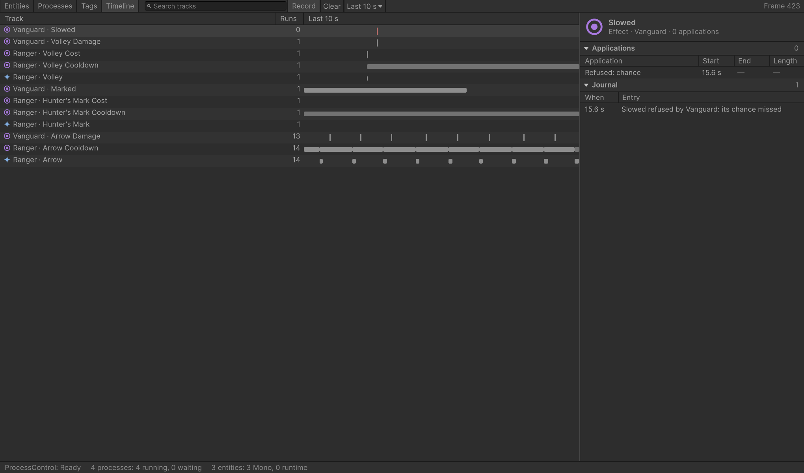

Timeline
Timeline shows what the entities' abilities and effects did over the last seconds.

The Debugger's Timeline view: each track's runs, and an effect's applications and journal.
What it records
While the Debugger is open in Play mode, the Timeline records, whatever view shows:
- each ability's runs, stage by stage;
- each refused activation;
- each effect's time on the shelf;
- each refused effect;
- an effect journal of the entities it lists.
It starts afresh each time Play mode does.
Timeline tools
| Control | What it does |
|---|---|
| Record | Stops and starts recording. |
| Clear | Forgets what it recorded. |
| Last 10 s | Picks how far back the strips reach: 5, 10, 30 or 60 seconds. |
Tracks
The Timeline's list has a track for each entity's ability or effect, the newest first. A track shows its number of Runs, and a strip of its spans:
- a bar for a run, or for an effect's time on the shelf;
- a tick for an instant effect or a refusal.
The search finds a track by its entity or its asset. A track keeps its last 100 spans.
An ability's track
An ability's track shows its Stages: each with its policy and its tasks, when the selected run reached it and how long it stayed, or that it didn't.
Then it shows its Runs, the latest first. A click on a run shows its stages.
| Column | Shows |
|---|---|
| Start | When the run started. |
| Length | How long it ran. |
| Stages | The stages it reached. |
| Outcome | Running, Ended, Stopped, or the refusal and why. |
An effect's track
An effect's track shows its Applications, its refusals among them, each with its Start, End and Length.
Then it shows its Journal, newest first: each landing, tick, hit and removal of the effect on the entity, and each worker that ran. The journal keeps its last 1,000 entries.
A click on an entry shows its parts: a number's trace, a hit's breakdown, or what a worker queued and what came of it (Entities: Effect Journal).